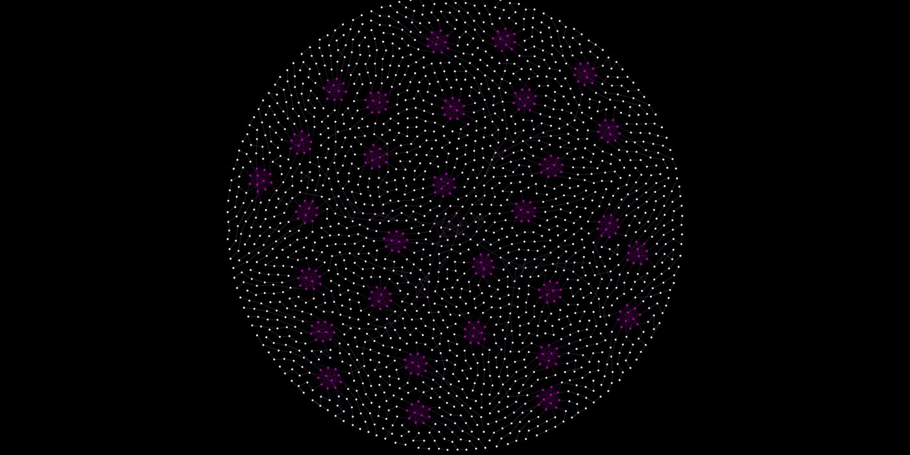
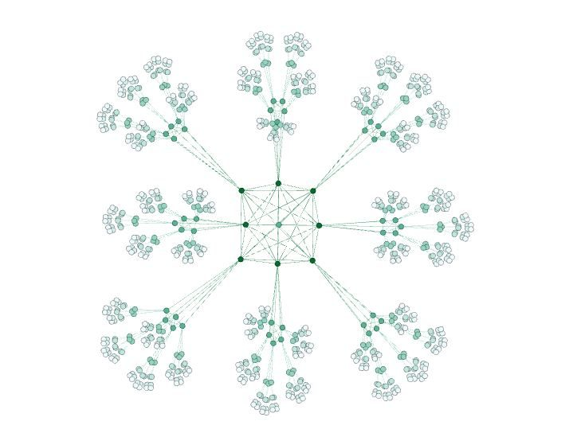
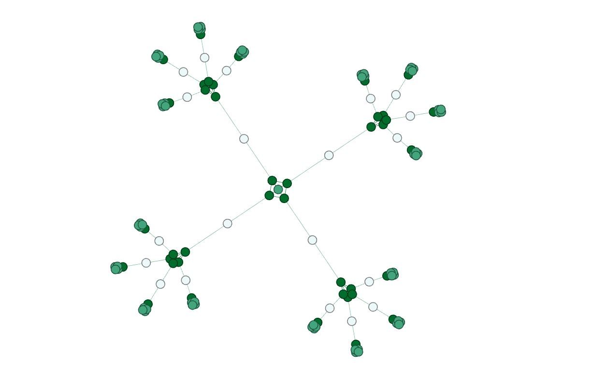
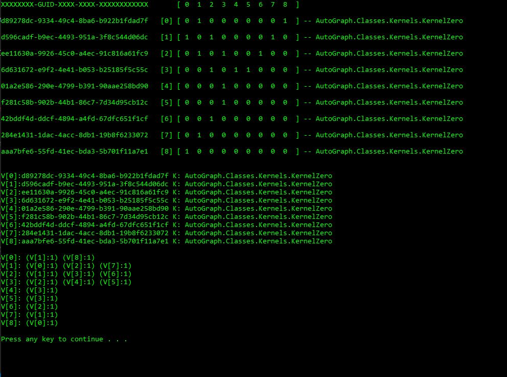

Graphtacular
early codeC# · 2019
A C# console app I wrote in 2019, before AI tools were around. A graph grows itself from one seed vertex by following a shared list of instructions, like a genome.
History: kept as the 2019 original.
How it grows
- Vertex and kernel. Each vertex holds a kernel. The kernel can act on its own vertex and on the graph the vertex is in.
- Strand. A strand is a numbered list of instructions that every vertex shares. One step looks like
{"KbranchUndirected",1,1}: add one child on an undirected edge of weight 1. - Growth. The seed vertex runs the first step. Each vertex it makes runs the next step, and so on down the strand, so the whole graph grows from one seed.
- Cap. Growth stops at 3,828 vertices.
// StrandLib.cs: the Flower strand
1 {"KcompleteCluster", 8, 1}
2 {"KbranchUndirected", 1, 1}
.. // 3 to 6: the same branch
7 {"KcompleteCluster", 8, 1}
.. // the pattern twice more
19 {null}KcompleteCluster with 8 adds eight children that are all joined to each other. KbranchUndirected with 1 adds one child on an edge. null ends the strand.
Renders
Graphs are exported as GEXF files and rendered in Gephi.


The Graph class
It stores the graph as an adjacency matrix. Besides growing graphs, the Graph class measures them:
- degree (in, out, and mutual edges)
- neighbors, and neighbors within k steps
- islands (disconnected pieces)
- clustering coefficient

Build
- C# console app
- .NET Core 2.2 (still builds on .NET 8)
- 89 xUnit tests (all still pass)
- export: GEXF